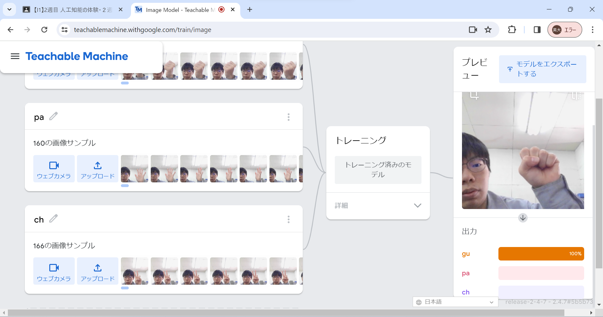
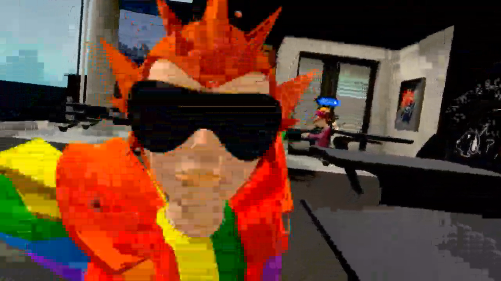

第2週目
2-1 １週目のレポートをHTMLで作る
１週目のレポート
1.内容
第1週目に体験したsctatchを用いた，サイエンスアートや簡単なゲームを作成したことの内容をHTML方式で書き起こした．
2.感想
初めてHTMLでレポートを書いたが，かなり難しかった．wordなどと違い，書いたものがすぐに目で見えるわけではないのがとても難しくかなり苦戦した．
2-2 機械学習体験

1.内容
Meachable Machineを用いた，じゃんけんの出した手を判定する機械学習を体験した．グー，チョキ，パーそれぞれの手の形を160枚ほど撮影し，
学習させた
2.感想
それなりに高い精度で出した手を判定していた．しかし，判定を間違えることも多々あったのでそれを解決するためにはもっと多くの材料となる
画像が必要だと感じた．
2-3 VR（バーチャルリアリティー：Virtual Reality）会議室の体験

1.内容
Meta社が発売しているMEta Quest 2を用いてバーチャルリアリティーを体験した
2.感想
画質はかなりきれいで，指の動きまでVR上に表現できる技術は素晴らしいと思った．しかし，少し酔ってしまったのでこの課題が解決できれば
より多くの人にVRの世界を利用し楽しむことができると実感した．